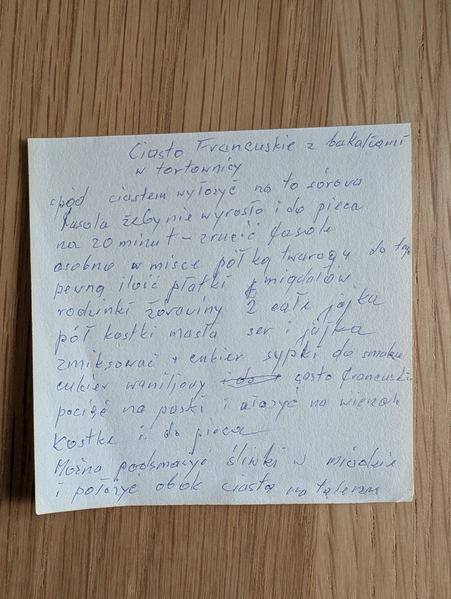

Ciasto francuskie z bakaliami

Składniki
- ciasto francuskie
- surowa fasola (do obciążenia spodu)
- pół kg twarogu
- płatki migdałów
- rodzynki
- żurawina
- 2 całe jajka
- pół kostki masła
- cukier sypki do smaku
- cukier waniliowy
- śliwki w miodzie (do podania)
Przygotowanie
- Spód tortownicy wyłożyć ciastem, na to surowa fasola, żeby nie wyrosło, i do pieca na 20 minut.
- Zrzucić fasolę.
- Osobno w misce twaróg, płatki migdałów, rodzynki, żurawinę, jajka i masło zmiksować z cukrem sypkim do smaku i cukrem waniliowym.
- Ciasto francuskie pociąć na paski i ułożyć na wierzch.
- Piec.
- Można podsmażyć śliwki w miodzie i położyć obok ciasta na talerzu.
Oryginalny zapis
Ciasto francuskie z bakaliami w tortownicy spód ciastem wyłożyć na to surowa fasola żeby nie wyrosło i do pieca na 20 minut – zrzucić fasolę osobno w misce pół kg twarogu do tego pewną ilość płatki migdałów rodzynki żurawiny 2 całe jajka pół kostki masła ser i jajka zmiksować + cukier sypki do smaku cukier waniliowy [skreślone: do] → ciasto francuskie pociąć na paski i ułożyć na wierzch kostkę i do pieca Można podsmażyć śliwki w miodzie i położyć obok ciasta na talerzu